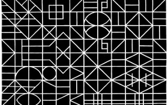

A trama e o círculo
The Mesh and the Circle
Mariana Caló, Francisco Queimadela
Portugal / Italy 2014
34 min – HD – Portuguese OV Engl. ST
Sc+DoP+E+P: Mariana Caló, Francisco Queimadela – S: Jonathan Saldanha
A film that is not afraid to wander (and the viewer with it) within the tight laces of its mesh, which plays with the «circle» and the guarantee of its self-sufficiency to break it as well, and lead it to connect to elements as varied as wrestlers, a dish of crème brulée, the pressure of a foot on a rope, a potter’s wheel, etc. To connect with the world of labour, as if it had always been about that. – Jean-Pierre Rehm
friday 9 okt 6.30 pm filmmuseum münchen
Mariana Caló (born 1984, Viana do Castelo, Portugal) and Francisco Queimadela (born 1985, Coimbra, Portugal) began their collaboration in 2010. They are currently active members in Colectivo Piso and Altes Finanzamt. They live between Oporto and Berlin.
Films Gradations of Time Over a Plane 2010-2013 – Observatory 2012 – Orle Effect 2013